


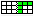
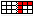

Table tab (T)
Settings for the whole table: structure, sizes, position, borders and colours.
Structure
| Button | Name | What does it do? |
|---|---|---|
 | Clear table | Clears the contents of all cells. The structure (rows and columns) is kept. |
| Add row | Adds a row. | |
 | Add column | Adds a column. |
| Delete row | Deletes the selected row. Click a row header first. | |
 | Delete column | Deletes the selected column. Click a column header first. |
 | Merge cells | Merges the selected cells into one cell. First select several cells by dragging. |
 | Unmerge cells | Splits a merged cell again. |
Sizes
| Button | Name | What does it do? |
|---|---|---|
| ⇅ | Grid line width | Thickness of the lines between the cells. |
| ⇅ | Row height | Default height of the rows. |
| ⇅ | Column width | Default width of the columns. |
Tip: to change a single row or column, drag the dividing line in the headers.
Position
| Button | Name | What does it do? |
|---|---|---|
| X | Move X | Horizontal position of the table in mm, measured from the zero point of the rulers. |
| Y | Move Y | Vertical position of the table in mm. |
You can also move the table with the mouse: hold Ctrl and drag. Move X and Move Y follow along.
Borders and colours
| Button | Name | What does it do? |
|---|---|---|
| ■ | Table border colour | Colour of the outer border of the table. |
| ⇅ | Table border width | Thickness of the outer border. |
| ⇅ | Table border radius | Rounded corners of the table (0 = square corners). |
| ⇅ | Cell corner radius | Rounded corners of the individual cells. |
| ■ | Table background colour | Background colour of the whole table. |
| ■ | Header colour | Colour of the row and column headers in the designer. |
| ─ | Table border style | Style of the border: none, solid, dashed, dotted or double. |
 Cell tab →
Cell tab →